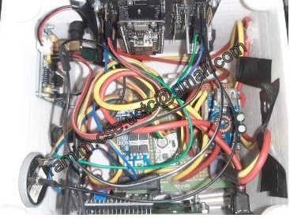
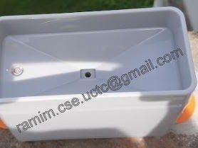
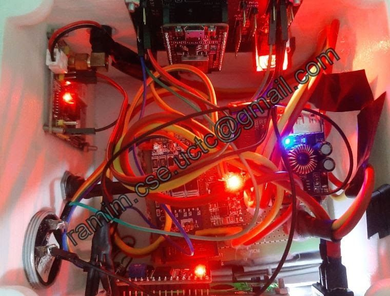
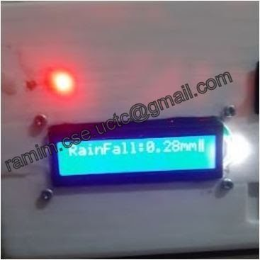
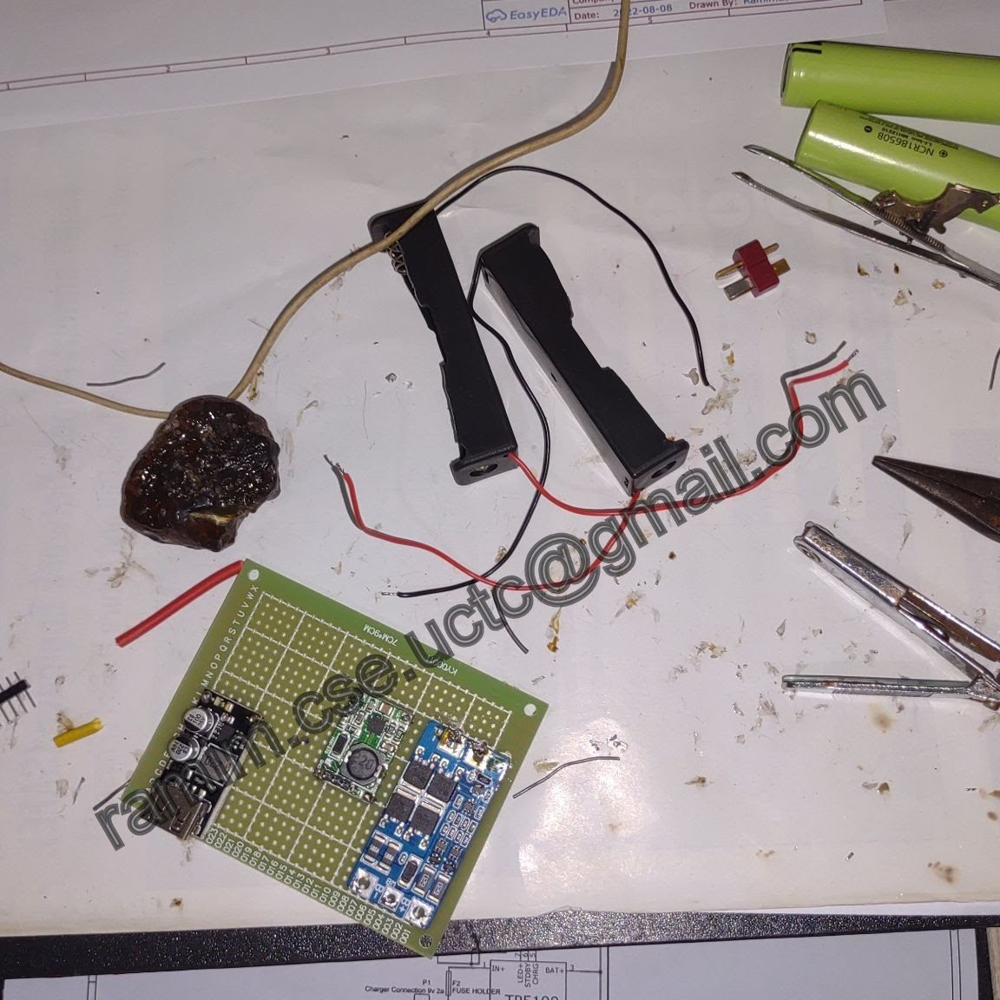
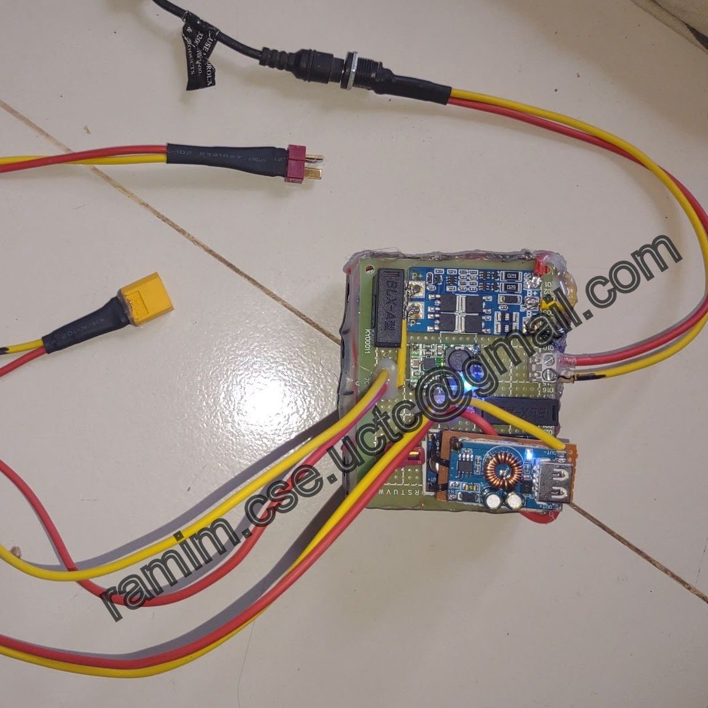
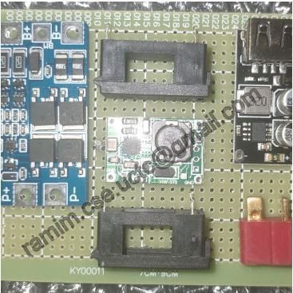

Utilities & City
Mountain Collapse Alert & Rainfall Monitor (GSM)
An IoT rainfall monitoring system for landslide prevention. A rain gauge on an ESP32 feeds a central database, and the system issues real-time mountain-collapse alerts by buzzer and SMS over GSM.
- Type
- Rainfall monitoring & landslide alert system
- Platform
- ESP32 Dev Kit v1
- Alerts
- Buzzer & GSM SMS
- ESP32
- Rain gauge
- GSM / SMS
- Central database
- 16x2 LCD
- Buzzer alarm
- Battery backup
Overview
This project aims to prevent landslides in mountainous regions. It measures rainfall with a rain gauge, sends the readings to a central database, and uses the calculated rainfall to raise advance mountain-collapse alerts in real time, locally with a buzzer and remotely by SMS over GSM.



How it works
- The rain gauge measures rainfall at the site.
- The ESP32 collects the rainfall data and sends it to a central database.
- The system calculates the rainfall and, when conditions call for it, broadcasts an advance mountain-collapse alert on a buzzer.
- The GSM module sends SMS alerts at the same time.
- A 16x2 LCD shows the system's current status.
Hardware
- Microcontroller: ESP32 Dev Kit v1
- Sensor: rain gauge
- Alerts: buzzer for local real-time alarms; GSM module for SMS alerts
- Display: 16x2 LCD for system information
- Power: power management system with battery backup for reliable operation




Block diagrams, circuit diagrams and source code are confidential to the client.